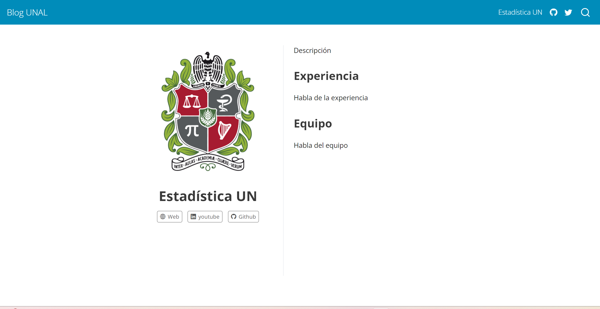

Blog
Crear tu propio blog en Quarto es muy sencillo, puedes utilizar muchs de las opciones que son válidas para sitios web creados con Quarto.
Crea tu Blog
Para crear tu propio blog en R, sigue los siguientes pasos:
- Ve a la esquina superior derecha de RStudio, selecciona el ícono de cajita y luego da clic en la opción de “New Project”

- Selecciona la opción “Quarto Blog”
- Llena las opciones que aparezcan en la ventana emergente automáticamente
- Da clic en “Render” y echa un vistazo a la primera versión de tu blog.
Tal y como sucede cuando creas un sitio web, en el directorio del blog se crean automáticamente ciertos archivos que cumplen las mismas funciones que en Páginas Web, la carpeta “posts” guarda las actualizaciones que hagas en tu blog.
Acerca de
Esta sección en tu blog brinda a tus lectores más información sobre ti o tu organización. Esto puede habilitarlo simplemente con la opción aboutdondes especificas el tema (template) y otras herramientas que desees que aparezcan (link de Twitter, GitHub, YouTube, etc).
---
title: "Estadística UN"
image: Escudo_UNAL.png
about:
template: jolla
links:
- icon: globe2
text: Web
href: https://unal.edu.co/
- icon: linkedin
text: youtube
href: https://www.youtube.com/@UNALoficial
- icon: github
text: Github
href: https://github.com/estadisticaun
---Con template puedes modificar el tema de esta sección


Si agregas un “id” con la opción id en about puedes ubicar toda la sección de “acerca de” donde tu desees, en otras palabras, puedes agregar contenido aantes y despues del “acerca de”.
---
title: "Estadística UN"
image: Escudo_UNAL.png
about:
id: tu-id
template: jolla
links:
- icon: globe2
text: Web
href: https://unal.edu.co/
- icon: linkedin
text: youtube
href: https://www.youtube.com/@UNALoficial
- icon: github
text: Github
href: https://github.com/estadisticaun
---
Antes de acerca de
:::{#tu-id}
Todo lo de acerca de
:::
Después de acerca deAgregar una publicación
Para agregar una nueva publicación a tu blog, debes dirigirte a la carpeta “posts” y crear una nueva carpeta con el nombre de tu nuevo artículo, en ella creas un archivo llamado index.qmd junto con una imagen. Cuando reenderices nuevamente, este ya estará actualizado.
Crea la carpeta con los archivos.
En
index.qmdescribe lo que desees que vaya en el artículo.
---
title: "Actualización"
author: "Estadísticas UN"
date: "2023-12-15"
categories: [news]
---- Reenderiza.
Recuerda que para cambiar el idioma en el que aparecen las opciones del blog, es necesario agregar/modificar el archivo _language.yml. En nuestro ejemplo, usamos el formato dado por Quarto que puedes encontrar aquí.
Borradores
Si estas creando un nuevo artículo para tu blog y aún no lo deseas publicar, puedes activar la opción draft: true, con ella puedes modificar dicho archivo hasta que lo tengas listo y quieras publicarlo.
---
title: "Actualización"
author: "Estadísticas UN"
date: "2023-12-15"
categories: [news]
draft: true
---Cuando reenderices, aún no aparecerá publicado el articulo “Actualización”.
Fecha de actualización
Si ya publicaste cierto artículo en tu blog y quieres modificarle algo, puedes usar la opción date-mofified de modo que informes a tus lectores que se hizo una modificación del artículo que están visualizando.
---
title: "Actualización"
author: "Estadísticas UN"
date: "2023-12-15"
categories: [news]
date-modified: "2023-12-18"
---
Categorías
Para agregar una categoría, primero debes incluir en el índice principal de tu blog la opción categories: true, luego, en cada artículo o .qmd de tu blog, incluye la opción categories y especifica la categoría a la que pertenece.
En el índice principal:
---
title: "Blog UNAL"
listing:
contents: posts
sort: "date desc"
type: default
categories: true
---En cada artículo que agregues:
---
title: "Actualización"
author: "Estadísticas UN"
date: "2023-12-15"
categories: [nuevo]
date-modified: "2023-12-18"
---Temas
Quarto incluye 25 temas de Bootswatcha para blogs, puedes encontrar la lista completa aquí
RSS Feed
Con Quarto puedes agregar un “RSS Feed” que permite a los lectores de tu blog recibir notificaciones cuando agregues algo nuevo a tu blog.Quarto permite agregar esta opción para cuando agregues algo en generall al blog o en cierta categoría.
Para incluirlo en tu blog, debes agregar en tu archivo quarto.yml en website la opción site-url donde pones la URL de tu blog y la opción description para añadir una corta descripción de tu blog que atraiga a tus lectores.
Luego, en la página de inicio del blog incluye la opción feed: true
---
title: "Blog UNAL"
listing:
contents: posts
sort: "date desc"
type: default
categories: true
sort-ui: false
filter-ui: false
feed: true
page-layout: full
title-block-banner: true
---Si quieres que el feed sea únicamente para ciertas categorías entonces debes especificarlo en categories en feed
---
title: "Blog UNAL"
listing:
contents: posts
sort: "date desc"
type: default
categories: true
sort-ui: false
filter-ui: false
feed:
categories: [nuevo, news]
page-layout: full
title-block-banner: true
---